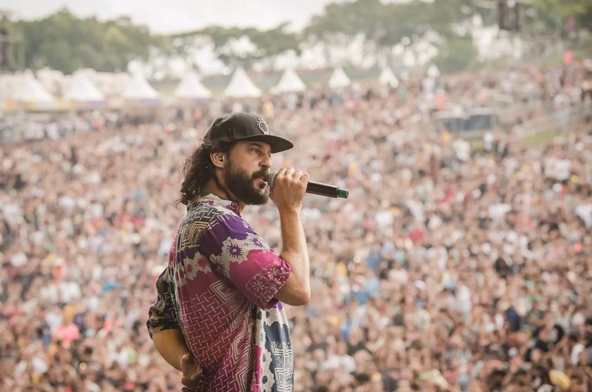
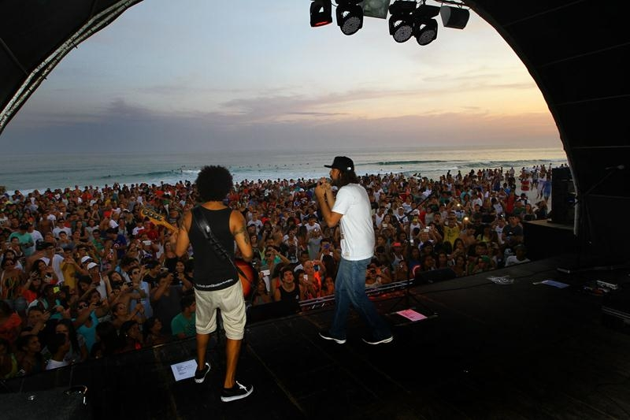
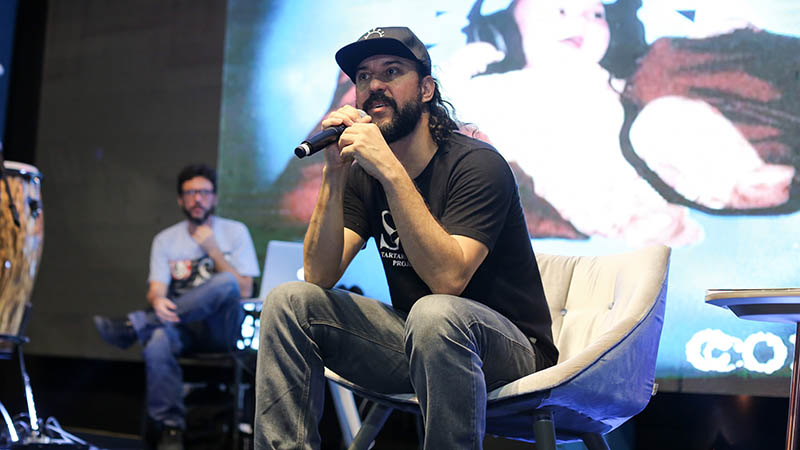

Galería de Imágenes
Explora algunos momentos destacados de la carrera de Gabriel O Pensador:



A continuación, una de las canciones más conocidas de Gabriel o Pensador. ¡Dale play y disfruta!
Explora algunos momentos destacados de la carrera de Gabriel O Pensador:
A continuación, una de las canciones más conocidas de Gabriel o Pensador. ¡Dale play y disfruta!